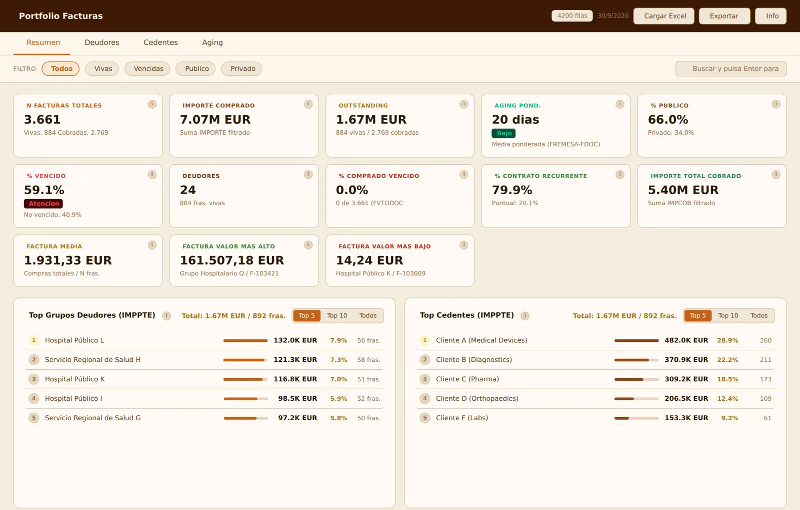
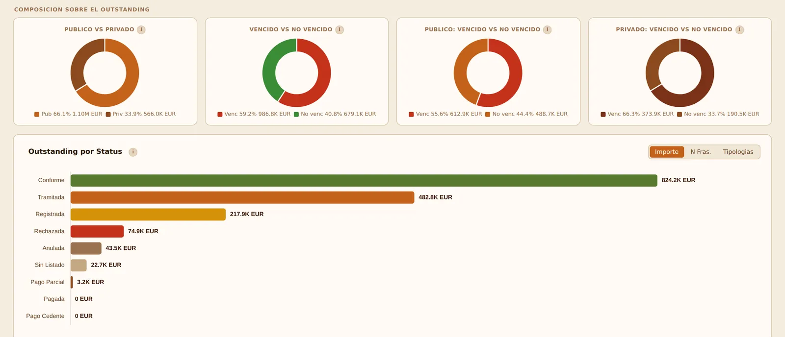
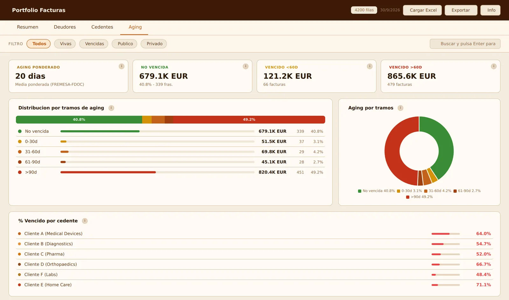
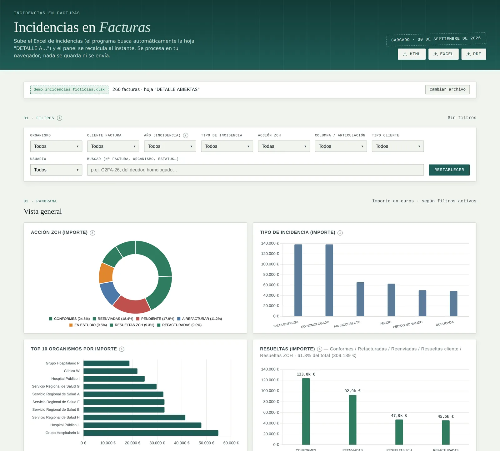
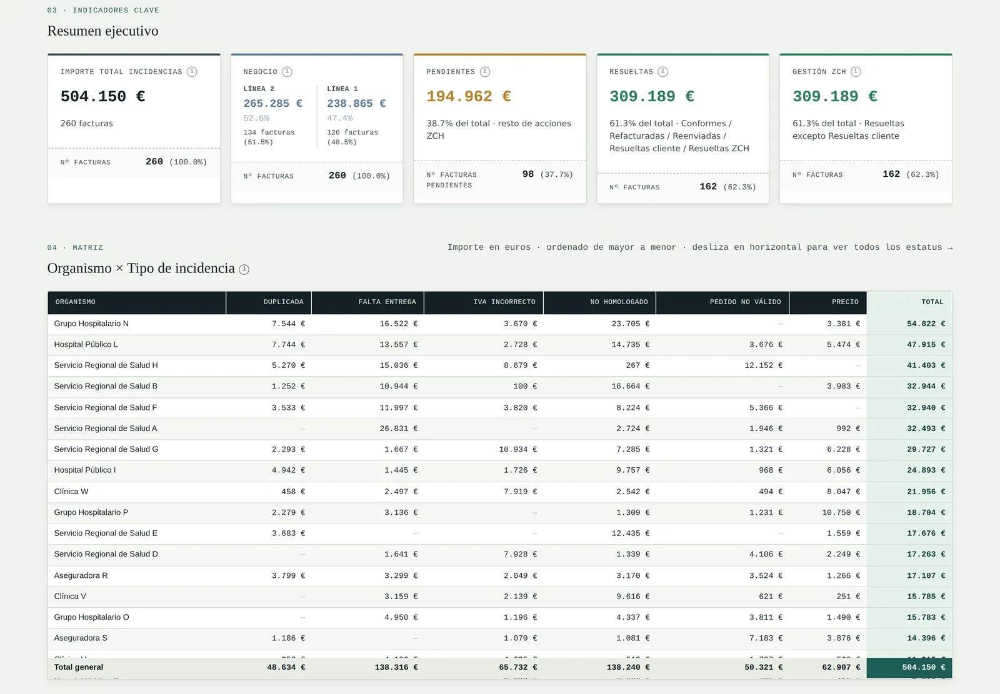
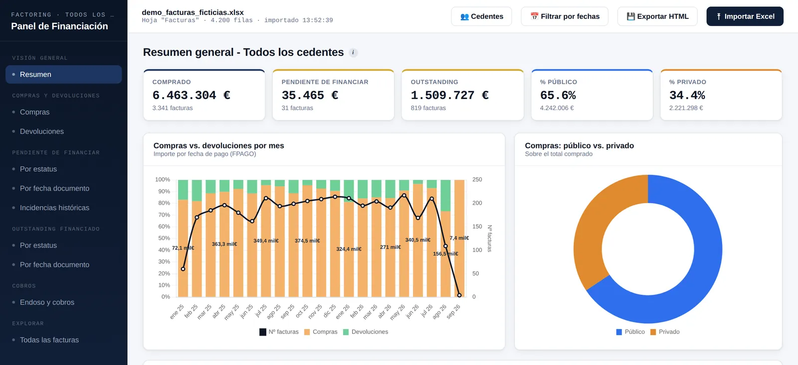

Herramientas de reporting de la cartera de facturas
Diseñé y construí tres dashboards en el navegador que convierten los exports de Excel del sistema de factoring en KPIs de cartera.

Captura de la herramienta real con datos inventados · clic para ampliarContexto
Zintra Capital compra facturas sanitarias a sus clientes. La cartera viva era de 50–60 M€ con más de 10.000 facturas, y los datos salían del sistema en exports de Excel con más de 90 columnas.
Problema
Cada pregunta sobre la cartera (qué está pendiente, qué está vencido, dónde se concentra el riesgo, qué facturas están bloqueadas) obligaba a filtrar y hacer tablas dinámicas a mano. Las facturas impagadas no se podían identificar con fiabilidad.
Qué hice
- Diseñé y construí los tres dashboards durante mis prácticas.
- Definí la regla de cálculo de cada KPI y la documenté dentro de cada herramienta.
- Desarrollé los filtros y las exportaciones a HTML, PDF y Excel.
Solución
- Dashboard de KPIs de cartera
- Pendiente frente a cobrado, porcentaje vencido, concentración por deudor y cliente, y antigüedad por tramos.
- Dashboard de incidencias
- Agrupa las incidencias por tipo y acción de seguimiento, con una matriz deudor × incidencia.
- Panel de financiación por cliente
- Compras, devoluciones, cobros e importes pendientes de financiar, por cliente y mes.
Cada herramienta es un único archivo HTML que lee el export en el navegador. Ningún dato se sube a ningún servidor.
Pruébalo: KPIs de cartera (datos inventados)
Resultado
- La dirección pudo ver con claridad las facturas impagadas por primera vez.
- Las tablas dinámicas manuales se sustituyeron por cargar el último export.
- ~5.000 líneas de JavaScript, con la definición de cada KPI documentada en la herramienta.
Evidencias
- Dashboard de KPIs de cartera: resumen

Dashboard de KPIs de cartera: composición
Dashboard de KPIs de cartera: antigüedad
Dashboard de incidencias: vista general
Dashboard de incidencias: resumen y matriz
Panel de financiación por cliente


Ver código: Antigüedad por tramos y antigüedad ponderada
Del dashboard de KPIs de cartera. Antigüedad por factura = fecha de remesa − fecha de factura; el KPI de cartera la pondera por el importe pendiente.
// Aging per invoice: AGING = IF(FREMESA - FDOC = 0, 1, FREMESA - FDOC)
function calcAgingDias(r){
var frem = r._fremesa, fdoc = r.FDOC ? new Date(r.FDOC) : null;
if(!frem || !fdoc) return null;
var d = Math.round((frem - fdoc) / 86400000);
return d === 0 ? 1 : d;
}
function renderAging(rows, vivas){
var ab = {'No vencida':0,'0-30d':0,'31-60d':0,'61-90d':0,'>90d':0};
vivas.filter(r => r._imppte > 0 && r._fv).forEach(function(r){
var d = (TODAY - r._fv) / 86400000; // days past estimated due date
var k = d<=0 ? 'No vencida' : d<=30 ? '0-30d' : d<=60 ? '31-60d' : d<=90 ? '61-90d' : '>90d';
ab[k] += r._imppte;
});
// Weighted aging = Σ(aging × outstanding) ÷ Σ(outstanding)
var w = vivas.filter(r => r._imppte > 0 && r._agingdias != null);
var sI = w.reduce((s, r) => s + r._imppte, 0);
var sP = w.reduce((s, r) => s + r._agingdias * r._imppte, 0);
var ag = sI ? sP / sI : 0;
// … render KPI cards, bracket bars and doughnut
}Las herramientas en producción trabajan con datos reales de la empresa y no se publican. Las capturas muestran las mismas herramientas cargadas con datos inventados.
Herramientas
JavaScript · HTML · Chart.js · SheetJS · ExcelJS · jsPDF · Excel